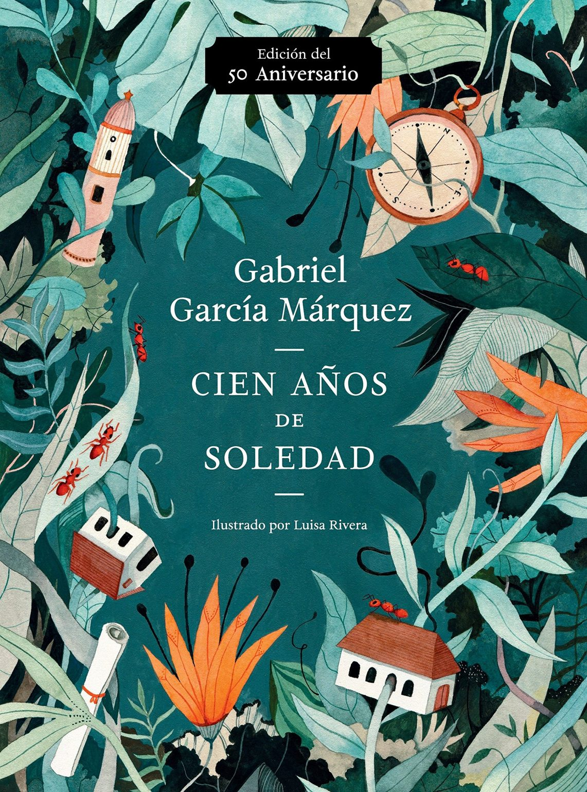

1. Personajes
- José Arcadio Buendía: Patriarca obsesionado con la ciencia y la alquimia. Su búsqueda de conocimiento lo lleva a la locura, simbolizando la lucha entre la razón y la fantasía.
- Úrsula Iguarán: Esposa fuerte y resistente que trata de mantener unida a su familia. Su longevidad contrasta con la decadencia de la familia Buendía.
- Aureliano Buendía: Coronel en la guerra civil, que se convierte en un líder solitario. Su vida refleja la fatalidad del destino en la historia de Macondo.
- Fernanda del Carpio: Representa la tradición y la rigidez. Su carácter estricto y su desprecio por lo cotidiano contribuyen a la descomposición de la familia.
2. Eventos Clave
- Fundación de Macondo: José Arcadio Buendía y su familia crean un pueblo utópico que se convierte en el escenario de la historia familiar.
- Llegada de los gitanos: Los gitanos traen maravillas y asombros, introduciendo a los Buendía en un mundo de magia y misterio.
- Guerras civiles: Conflictos políticos que afectan a Macondo, reflejando la turbulenta historia de América Latina y la lucha por el poder.
- Cierre del ciclo: La revelación de que la historia de los Buendía está condenada a repetirse, simbolizando la inevitabilidad del destino.
3. Símbolos
- El hielo: Representa tanto la maravilla de la civilización como la alienación que sienten los personajes.
- La lluvia: Símbolo de la purificación, pero también del caos que arrastra a Macondo hacia la destrucción.
- El insomnio: Refleja la incapacidad de los personajes para enfrentar su historia y su pasado, afectando su percepción de la realidad.
4. Temas Principales
- La soledad: Un tema central que afecta a todos los personajes, simbolizando la desconexión en un mundo donde las relaciones se desvanecen.
- El tiempo cíclico: La idea de que la historia tiende a repetirse, sugiriendo un ciclo interminable de sufrimiento y redención.
- Crítica social: A través de la narrativa, García Márquez critica la corrupción y los abusos de poder, reflejando la historia de América Latina.